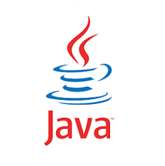
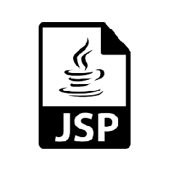
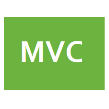
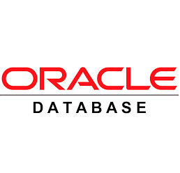
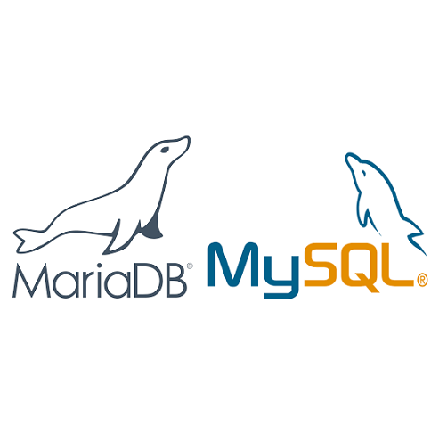
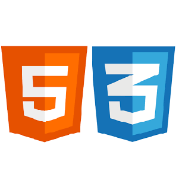
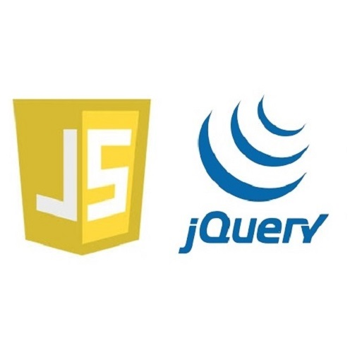

ability
-
1
Java

변수와 타입, 연산자, 조건문, 반복문, 배열, 클래스, 상속, 인터페이스, 예외처리, API, 스레드, 제네릭, 컬렉션 프레임워크
-
2
JSP / Servlet

JSP 플랫폼 구축, 표현식, 스크립트릿, SCOPE, EL, JSTL, 액션 태그, 전역 변수, 요청 객체, 응답 객체, 세션 객체, 애플리케이션 객체,
출력 객체, 페이지 컨텍스트 객체, 데이터 전송 방식, HttpServlet, HttpServletRequest, HttpServletResponse, Session, PrintWriter,
applicationContext, init, Service, Destroy, doPost, doGet, Servlet Scope, JAVA Build
-
3
MVC

Controller, Model, View, JDBC, VO(DTO), DAO, Page Modularity, Member Module, Board Module, Payment Module,
Databank Module, Product Module, Email Module, File Control, WAR Deploy
-
4
Spring Legacy
Controller, Service, DAO, View, MyBatis, Project Configuration, Context Configure, Mapper, Dependensy Inject,
Aspect Oriented Programming, Inversion of Control, Junit, Restful API, AJAX/JSON, Transaction and Logging, Intercepter, Maven/Gradle Build, Deploy
-
5
Oracle

데이터베이스 환경구축, 테이블/시퀀스/뷰 생성 및 제거와 변경, 데이터 무결성 제약조건 구립 및 설정,
CRUD(데이터 추가/검색/변경/삭제), 조인, 이중쿼리, 집합연산, 트랜잭션 처리, 트리거 작업,
권한 작업, 백업 및 복구, SQLP/PL, SQL Plus, SQL Developer, Eclipse, DataSource
-
6
MySQL / MariaDB

데이터베이스 환경구축, 사용자 관리, 권한 작업, 테이블/인덱스 생성 및 제거와 변경,
기본키/외래키 등 제약조건 설정, 레코드 추가/제거/검색/변경, 필드연결, 서브쿼리, 그룹화
-
7
HTML / CSS

DOM 선택, DOM 탐색, DOM 조작, DOM 이벤트, DOM 효과, 플러그인 제작, Window, Document, History, Location, Screen,
Navigator, Timer, AJAX/JSON, UI 제작 및 구현, 지도 API, 주소 API, GPS 및 날씨 API, 차트 API 등
-
8
JavaScript / jQuery

DOM 선택, DOM 탐색, DOM 조작, DOM 이벤트, DOM 효과, 플러그인 제작
Window, Document, History, Location, Screen, Navigator, Timer, AJAX/JSON, UI 제작 및 구현,
지도 API, 주소 API, GPS 및 날씨 API, 차트 API 등